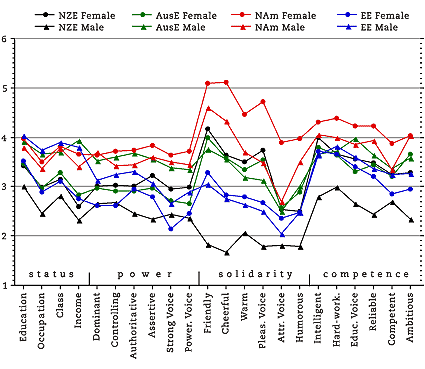
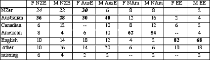
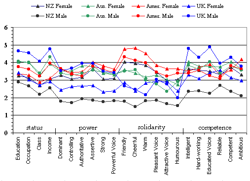
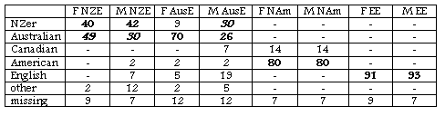

Evaluating English Accents WorldWide
Results: ENGLAND
A/ High School students (Cornwall)
B/ University students (York)NEW 1 OCT 2002A/ ENGLAND HIGH SCHOOL SAMPLE
Personality Trait Means
50 Cornish high school students
27 female, 21 male, 2 missing, mean age 13.2
(collected by Kirk Sullivan)

Cornish School Childrens' Accent Guesses
majority/plurality percentage for each speaker in boldface;
major erroneous guesses italicised

Points to note:
The NAm female is again the clear leader in all but the status traits; the NAm
male is usually second in solidarity and competence traits.
The male EE voice is high only in the status traits; the female EE voice is low
in all traits.
The AusE male ranks well about the EE male in both power and solidarity.
The NZE female is rated quite highly in solidarity, almost as highly as she is by
the New Zealanders.
B/ ENGLAND UNIVERSITY SAMPLE
Personality Trait Means
43 University of York students
33 female, 8 male, 2 missing, mean age 20.4
(collected by Dominic Watt)

Points to note:
The NAm female is again the leader in the solidarity traits, followed by the NAm male.
The male EE voice is top in status and comptence traits, and high in power; the female EE voice is low in all except competence.
The university students are much more positive about the EE male than the high school students in all except the solidarity traits. The EE female is rated negatively like the high school students, however. It should be noted that the EE accent is not the one either sample are likely to speak themselves.
The AusE, NAm and NZE female are closely bunched, especially in power and solidarity.
The NZE female is rated quite highly in solidarity, almost as highly as she is by the New Zealanders.
University of York Accent Guesses
majority/plurality percentage for each speaker in boldface;
major erroneous guesses italicised

Points to note:
Like other english-speaking countries, their identification of NAm and EE accents is close to perfect.
Their accuracy in identifying an accent as Antipodean is also very high. However, their ability to differentiate between AusE and NZE is low (except for the AusE female).
Created by:
Owen Baxter,
Content: Donn Bayard & James Green; Modified: 1 October 2002